Elm mine2¶
19×30 tiles · part of Elmmine
Containers¶
Container 1
- Gold coins 50% · ×75 to 750
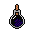
Miner's lamp fuel 100% · ×1 to 3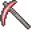
Blackwater rusted pickaxe 100% · ×1 to 2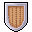
Superior wooden shield 50%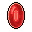
Ruby gem 33.3333% · ×5 to 20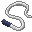
Amphibian whip 50%- Blackwater brew 50% · ×10 to 20
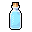
Bottle of mountain water 20% · ×4 to 10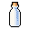
Empty flask 20% · ×10 to 20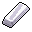
Silver bar 20% · ×1 to 2
Container 2
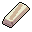
Lead bar 100%- Gold coins 100% · ×1 to 4
Container 3
- Gold coins 100% · ×10 to 120
- Fine shirt 66.6667%
- Mead 66.6667% · ×1 to 8
- Blackwater brew 66.6667% · ×1 to 5
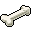
Bone 100% · ×1 to 10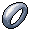
Ring of damage +1 50%- Polished ring 33.3333%
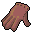
Leather gloves of attack 25%
Exits¶
Monsters & NPCs here¶
| Name | HP |
|---|---|
| Feygard patrol guard | 0 |
| Slippery Venomfang | 38 |
| Noxious venomfang | 44 |
| Dun olm | 61 |
| Albino olm | 66 |
| Hard-skinned olm | 68 |
| Blackened olm | 75 |
| Confused Feygard soldier | 211 |
Map ID: elm_mine2 · Data from v0.8.18